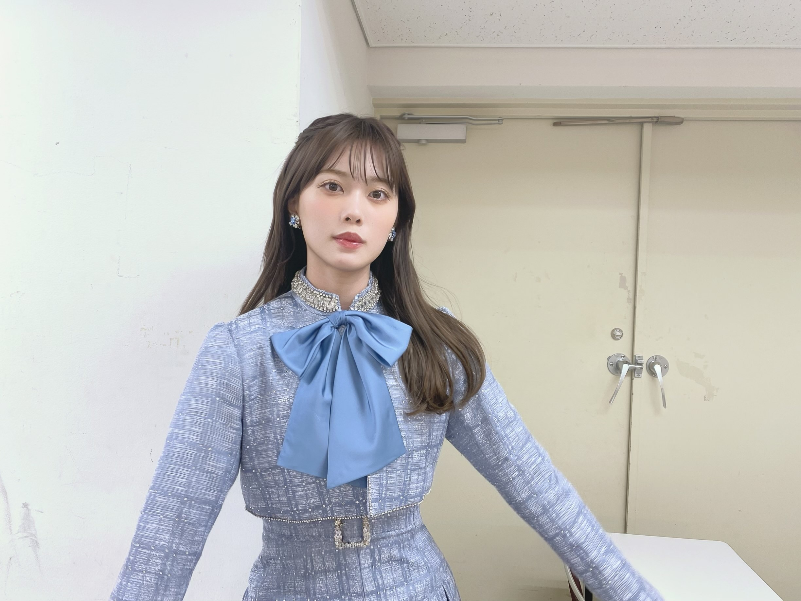

2021/0417Satみずいろ
こんばんは！
伊藤純奈です

すごい絶妙な瞬間の写真(笑)
ちゃんとしたお顔の写真は
Instagramに載せています↓
遅くなりましたが
乃木坂46
9th YEAR BIRTHDAY LIVE
〜2期生ライブ〜
みてくださった皆様ありがとう
ございました☺︎
センター企画では
サヨナラの意味を
歌わせて頂きました！
色々な思い入れがあるこの曲を
やっと叶った2期生ライブで
歌う事ができて嬉しかったです。
そしてみおな、卒業おめでとう！
初期から2期生を引っ張ってくれて
大好きでいてくれてありがとう。
やっぱり2期生の真ん中はみおなだなあと
改めて思いました。
最後までたくさんありがとう。
これからもよろしくねっ
配信という形でしたが
1年越しに2期生ライブ、開催できて
本当に幸せでした！！
ありがとうございました！


不思議な子たちの集まりだなあと
改めて思いました。2期生。(笑)
そんなところが愛おしい〜〜！らぶ！
明日18日は
筒美京平さんのトリビュートコンサートに
ひなちまと参加させて頂きます！
今からとっても緊張していますが
楽しみです☺︎よろしくお願い致します！
それでは〜
2021/04/17 20:18
コメント(355)
純奈ちゃんブログありがとう
二期生ライブ観たよー。
純奈ちゃんセンターのサヨナラの意味で泣きました…涙
特典配信や二期生ハウスでも二期生の仲の良さが観れて最高でした。
明日は観れないけど楽しんで頑張ってね。
二期生ライブ観たよー。
純奈ちゃんセンターのサヨナラの意味で泣きました…涙
特典配信や二期生ハウスでも二期生の仲の良さが観れて最高でした。
明日は観れないけど楽しんで頑張ってね。
純奈ちゃんブログ更新ありがとう！
2期生ライブ、おつかれさまでした！始まる前から泣いてましたが、ほんとに最高でした☺︎
乃木中の2期生HOUSEもお腹がよじれて息ができないくらい笑いました〜！いまだに1日一回はみてます。
筒美京平さんのトリビュートコンサート、近くに住んでたら絶対行きたかったです。いつもの純奈ちゃんらしく、楽しんでね☺︎
2期生ライブ、おつかれさまでした！始まる前から泣いてましたが、ほんとに最高でした☺︎
乃木中の2期生HOUSEもお腹がよじれて息ができないくらい笑いました〜！いまだに1日一回はみてます。
筒美京平さんのトリビュートコンサート、近くに住んでたら絶対行きたかったです。いつもの純奈ちゃんらしく、楽しんでね☺︎
可愛い
バスラおつかれさまでした。
サヨナラの意味本当に良かったです。
未央奈ちゃんの最後のライブ、2期生らしさが見れて楽しかったです。
トリビュートコンサート頑張ってください！
サヨナラの意味本当に良かったです。
未央奈ちゃんの最後のライブ、2期生らしさが見れて楽しかったです。
トリビュートコンサート頑張ってください！
純奈ちゃん ブログ更新ありがとう
二期生ライブ凄く良かった
さよならの意味の純奈ちゃんが最高でした
本当にありがとう
二期生ライブ凄く良かった
さよならの意味の純奈ちゃんが最高でした
本当にありがとう
こんばんは、純奈ちゃん可愛い大好きです。いつも応援してます
2期生ライブ見たよ！
純奈さんセンターのサヨナラの意味めっっちゃ感動しました！！！
ライブといえばやはり純奈さんのおうた！
欠かせません！！！
筒美京平さんの曲素敵ですよね。
楽しく頑張ってください根♩


ライブといえばやはり純奈さんのおうた！
欠かせません！！！
筒美京平さんの曲素敵ですよね。
楽しく頑張ってください根♩
純奈ちゃんの歌声にいつも元気貰ってるし、勇気を与えて貰ってる。私も純奈ちゃんみたいに歌が上手く歌えるようになりたいな！
6月の27枚目シングル、またミーグリ取ります！
またお話できるの楽しみにしてるね♡
6月の27枚目シングル、またミーグリ取ります！
またお話できるの楽しみにしてるね♡
純奈更新ありがとーーー
安定に可愛すぎるーー
つのすけってミーグリってニックネーム付けてもらえてめっちゃ嬉しかった〜
またミーグリ出来る時楽しみにしてますーー
これからも体調には気を付けて頑張ってください
安定に可愛すぎるーー
つのすけってミーグリってニックネーム付けてもらえてめっちゃ嬉しかった〜
またミーグリ出来る時楽しみにしてますーー
これからも体調には気を付けて頑張ってください
純奈ちゃんバスラお疲れ様でした☺️
純奈ちゃんセンターのサヨナラの意味めっちゃ良かった 泣けた
明日のコンサート頑張ってね☺️
純奈ちゃんセンターのサヨナラの意味めっちゃ良かった 泣けた
明日のコンサート頑張ってね☺️
純奈ちゃーーーん！！ブログ更新ありがとう！！
2期生ライブ本当にお疲れ様〜！！！とっても素敵だった、♡みんな綺麗だったし、楽しそうだったし、やっと出来た2期生ライブで未央奈が卒業はちょっと悲しかったけどでも出来てすっごい嬉しかったし本当に良かったよ︎︎☺︎2期生を改めて好きになりました！大好きだよ〜！！明日行けないけど頑張ってね応援してるよ〜！！大好きだよ！！！
写真もありがとう！！未央奈が考えてくれた衣装沢山みたいな〜
2期生ライブ本当にお疲れ様〜！！！とっても素敵だった、♡みんな綺麗だったし、楽しそうだったし、やっと出来た2期生ライブで未央奈が卒業はちょっと悲しかったけどでも出来てすっごい嬉しかったし本当に良かったよ︎︎☺︎2期生を改めて好きになりました！大好きだよ〜！！明日行けないけど頑張ってね応援してるよ〜！！大好きだよ！！！
写真もありがとう！！未央奈が考えてくれた衣装沢山みたいな〜
髪、だいぶ伸びましたね！
ショートもロングも似合う女性は優勝❤＝純奈❤❤
2期生ライブ、お疲れ様でした！
本当なら昨年の3月上旬に行うはずが、相次ぐライブ・コンサート自粛で中止を余儀無くされたのを覚えています。
未央奈さんの卒業、寂しいですね。
先日の乃木坂工事中で、2期生の仲の良さ・玲奈さんの即興ダンス苦手・純奈さんの(眞衣さんへの？)ツッコミのキツさが分かって、メチャクチャ笑っていました。
沙友理さんも卒業を発表をして、また悲しみが一つ増えますが、多くの意味を見出して、純奈さんのこれからの糧にしていってください。
これからも、ご活躍を心より願っています。
ご自愛ください。
ショートもロングも似合う女性は優勝❤＝純奈❤❤
2期生ライブ、お疲れ様でした！
本当なら昨年の3月上旬に行うはずが、相次ぐライブ・コンサート自粛で中止を余儀無くされたのを覚えています。
未央奈さんの卒業、寂しいですね。
先日の乃木坂工事中で、2期生の仲の良さ・玲奈さんの即興ダンス苦手・純奈さんの(眞衣さんへの？)ツッコミのキツさが分かって、メチャクチャ笑っていました。
沙友理さんも卒業を発表をして、また悲しみが一つ増えますが、多くの意味を見出して、純奈さんのこれからの糧にしていってください。
これからも、ご活躍を心より願っています。
ご自愛ください。
こんばんは
2期生ライブ最高でしたね
これからも皆さま仲良く
明日かー
チェック甘かったー
予定あってどうしても無理だ
筒美京平さんトリビュートに参加、素晴らしい
お2人を応援してます
2期生ライブ最高でしたね
これからも皆さま仲良く
明日かー
チェック甘かったー
予定あってどうしても無理だ
筒美京平さんトリビュートに参加、素晴らしい
お2人を応援してます
サヨナラの意味感動した！！やっぱ伝説のななみさんリスペクト軍団は違うわ！
2期生ライブとても楽しかったし、感動したし、素敵なライブでした！！いつまでもだいすき！！！
お疲れ様です
2期生のみんなが大好きです
これからも頑張ってください！
応援しています！
2期生のみんなが大好きです
これからも頑張ってください！
応援しています！
純奈、ブログ更新ありがとう。どこにでもいるおっさんです。
2期生ライブマジよかったよ。
サヨナラの意味
最高でした。
これからはセンター確定でお願いします。
純奈の歌声、大好きだよ。
それでは～
ひでき
2期生ライブマジよかったよ。
サヨナラの意味
最高でした。
これからはセンター確定でお願いします。
純奈の歌声、大好きだよ。
それでは～
ひでき
ずんな〜♪
２期生ライブ観たよ〜
幻の２期生ライブはチケット取れてたので現地で観たかった！
それにしても歌上手くなったね〜
さよならの歌い出しでしみじみ思った！
２期生ライブ観たよ〜
幻の２期生ライブはチケット取れてたので現地で観たかった！
それにしても歌上手くなったね〜
さよならの歌い出しでしみじみ思った！
お疲れ様
先日の2期生ライブ、最高でした。
みんな仲良しの様子を見て、なんか思わず微笑んだ。
改めて2期生の良さを感じさせたライブだと思う。
純奈が歌ったサヨナラの意味も、
本当に良かったんだよ！！
純奈が筒美京平さんのトリビュートコンサート
に出演てきてすごく嬉しかった。
やっぱり純奈の歌声がよったと。
コンサートに参加できないけど、応援しておる。
がんばってね！！
では
先日の2期生ライブ、最高でした。
みんな仲良しの様子を見て、なんか思わず微笑んだ。
改めて2期生の良さを感じさせたライブだと思う。
純奈が歌ったサヨナラの意味も、
本当に良かったんだよ！！
純奈が筒美京平さんのトリビュートコンサート
に出演てきてすごく嬉しかった。
やっぱり純奈の歌声がよったと。
コンサートに参加できないけど、応援しておる。
がんばってね！！
では
純奈、こんばんは。。。。。
☆ブログの更新、ありがとう !!!
モバメも毎日、ありがとう、、、
未央奈に続いて、まっちゅんの卒業発表がありました。
またさらに、変化、進化の乃木坂になりますね、、、
☆『筒美京平先生トリビュートコンサート』行きます !!
2階席の後方からですが、応援しています、、、
いろいろと考えると、
順番は、最初の方で、ちまとの duet かな ?
とにかく、名うての歌手の皆さまのなかでも
必ず、輝ける二人です。
存分に楽しんでください
私も二人を見つけながら、一瞬を楽しみます。
第４波は登山中でしょうか、、、東京は増加傾向??
東京圏『緊急事態宣言』解除!!
⇒ 『まん延防止等重点措置』発令中
まだ寒い日もあるかもしれません、、、
くれぐれも身体を大切にしてくださいね。。。。。
☆ブログの更新、ありがとう !!!
モバメも毎日、ありがとう、、、
未央奈に続いて、まっちゅんの卒業発表がありました。
またさらに、変化、進化の乃木坂になりますね、、、
☆『筒美京平先生トリビュートコンサート』行きます !!
2階席の後方からですが、応援しています、、、
いろいろと考えると、
順番は、最初の方で、ちまとの duet かな ?
とにかく、名うての歌手の皆さまのなかでも
必ず、輝ける二人です。
存分に楽しんでください
私も二人を見つけながら、一瞬を楽しみます。
第４波は登山中でしょうか、、、東京は増加傾向??
東京圏『緊急事態宣言』解除!!
⇒ 『まん延防止等重点措置』発令中
まだ寒い日もあるかもしれません、、、
くれぐれも身体を大切にしてくださいね。。。。。
明日のコンサート、是非楽しんでください。
見に行けないのが大変残念だけど、応援しています！
樋口さんと純奈さんの素晴らしい歌声が、大勢の人を感動させるだろうと信じています。
見に行けないのが大変残念だけど、応援しています！
樋口さんと純奈さんの素晴らしい歌声が、大勢の人を感動させるだろうと信じています。
ブログ更新お疲れ様です。
２期ライブ良かったね!!
スタートのアナスターシャから涙目で見てました。
去年の２期ライブがチケットが有ったのにまさかの
中止もあってホント良かったですね。
サヨナラの意味はホント感動しました。
早く満席のライブが再開すると良いですね。
明日のひなちまと出演するコンサート頑張ってください。
体調に気をつけてコンサート楽しんでください。
また、コメントしますね。
２期ライブ良かったね!!
スタートのアナスターシャから涙目で見てました。
去年の２期ライブがチケットが有ったのにまさかの
中止もあってホント良かったですね。
サヨナラの意味はホント感動しました。
早く満席のライブが再開すると良いですね。
明日のひなちまと出演するコンサート頑張ってください。
体調に気をつけてコンサート楽しんでください。
また、コメントしますね。
本当に2期生最高だよ
未央奈ちゃんが中心だよね！！
これからも2期生みんなの楽しく盛り上がる姿がすごく楽しみ
2期生、だいすき
未央奈ちゃんが中心だよね！！
これからも2期生みんなの楽しく盛り上がる姿がすごく楽しみ
2期生、だいすき
2期生ライブ見たよ！
サヨナラの意味も良かったし、ゆっくりと咲く花でうるっときてしまいました。
乃木中の2期生ハウスも楽しかったよ。
まいちゅんには、も少し優しくしてあげてねｗｗ
あと、お試し中も探っている感じがじわじわと面白い。
乃木坂46、最高だね！
サヨナラの意味も良かったし、ゆっくりと咲く花でうるっときてしまいました。
乃木中の2期生ハウスも楽しかったよ。
まいちゅんには、も少し優しくしてあげてねｗｗ
あと、お試し中も探っている感じがじわじわと面白い。
乃木坂46、最高だね！
じゅん！更新ありがと！最近めっちゃ綺麗になったよね！
前は可愛い系だったけど今は良い女的な笑笑
憧れる！
前は可愛い系だったけど今は良い女的な笑笑
憧れる！
じゅんなちゃん、最高です！！
ブログ更新ありがとうございます( ¨̮ )
2期生ライブ、お疲れ様でした︎☺︎最初から最後までアフター配信含めて全部素敵でした¨̮ ¨̮
明日のトリビュートコンサート、見にいきます！楽しんできてください︎☺︎︎☺︎
2期生ライブ、お疲れ様でした︎☺︎最初から最後までアフター配信含めて全部素敵でした¨̮ ¨̮
明日のトリビュートコンサート、見にいきます！楽しんできてください︎☺︎︎☺︎
集合写真ありがとっ
あ～純奈ちゃん愛おしい(´,,•ω•,,`)♡
コメントが遅くなってごめんね。ブログ更新ありがとう。最近は気温差が激しいね。今日も可愛いね。音楽番組見たよ。乃木中も見てるよ。2期生ハウス見たよ。本当に2期生は仲良いよね。既にコメントしたかもしれないけど先月ののぎおび見たよ。お疲れ様。楽しかったよ。新シングルは全種類買ったよ。口ほどにもないKISSのMV見たよ。ライブで観た時も凄かったけど改めて凄さを実感しています。乃木中のスタジオライブ良かったよ。先日のミニライブ見れなかった。ごめんね。乃木坂46のお誕生日おめでとうございます。前夜祭とライブ両方観たよ。お疲れ様。楽しかったよ。どの曲も良かったよ。裏話はありますか?期別ライブも観たよ。お疲れ様。楽しかったよ。どの曲も良かったよ。特にセンター企画のサヨナラの意味良かったよ。裏話はありますか?プレイボーイ買ったよ。ブログのどの写真も可愛いね。TVやライブや雑誌や舞台やドラマやラジオ頑張ってね。少し省略するけど許してね。純奈ちゃんはもし10万円が自由に使えたら何に使いますか?好きなおせち料理の料理は何ですか?おせち料理やお雑煮やお蕎麦は食べた?好きなお弁当のおかずは何ですか?好きなお餅の食べ方は何ですか?四季の中で1番好きな季節は何時ですか?遅くなったけどメリークリスマス!ケーキは食べた?プレゼント貰った?好きな花は何ですか?育ててみたい野菜や果物は何ですか?よく買うアイスは何ですか?好きな駄菓子は何ですか?去年を漢字一文字で表現するなら何ですか?年下からファンレターを貰うのは嬉しい?1度答えて貰った質問があるかもしれないけどもう1度答えて貰えると嬉しいです。これからも頑張ってください。ずっと応援しています。ファイト。次回のブログ更新楽しみにしています。体調を崩さないように頑張ってね。期別ライブ楽しかったよ。
純ちゃん好き〜
じゅんなちゃん
ブログ更新ありがとうねぇ〜
二期生ライブは
泣くと見えなくなっちゃうから
泣かずに観ようとしたけど 無理
二期ちゃんたちの歌に秘めた想い
未央奈の卒業
メンバーみんなの温かさ
溢れて涙が止まりませんでした
しっかりと見届けた後に
アフター配信のわいわいした感じ
大好きです ありがとう〜
明日は緊張するかもしれませんが
元気に頑張って行こー にこにこ
ブログ更新ありがとうねぇ〜
二期生ライブは
泣くと見えなくなっちゃうから
泣かずに観ようとしたけど 無理
二期ちゃんたちの歌に秘めた想い
未央奈の卒業
メンバーみんなの温かさ
溢れて涙が止まりませんでした
しっかりと見届けた後に
アフター配信のわいわいした感じ
大好きです ありがとう〜
明日は緊張するかもしれませんが
元気に頑張って行こー にこにこ
コメントに書き忘れたから書くね。アンダーライブのTV放送見れなかった。ごめんね。でもアンダーライブの最終日は配信で観たよ。これからも頑張ってください。ずっと応援しています。ファイト。次回のブログ更新楽しみにしています。体調を崩さないように頑張ってね。期別ライブ楽しかったよ。
純奈ちゃん、ブログ更新ありがとう！
2期生ライブお疲れ様でした。
純奈ちゃんが歌うサヨナラの意味本当に最高でした。
素敵な時間をありがとうございます。
明日のコンサート頑張って！！
これからも応援してます！
2期生ライブお疲れ様でした。
純奈ちゃんが歌うサヨナラの意味本当に最高でした。
素敵な時間をありがとうございます。
明日のコンサート頑張って！！
これからも応援してます！
私の憧れです…純奈ちゃん…好きです！ずっと推します！
じゅんちゃんに早く会いたいなぁ！
これからも応援してるよ～！
これからも応援してるよ～！
純奈ちゃん、こんばんは
インスタの写真も良いけど、ブログの写真も好き
LIVE、凄く楽しかったし、感動的でした
2期生メンバーって、凄く素敵な個性を持った人達の集まりだって思ってた
筒美京平さんのトリビュートコンサートに参加できるなんて光栄な事だと思うし、ちまと一緒に頑張ってね
お歌が上手じゃないと選ばれないと思うし、緊張するだろうけど頑張ってね☆彡.。
じゃぁ、またね☆彡.。
インスタの写真も良いけど、ブログの写真も好き
LIVE、凄く楽しかったし、感動的でした
2期生メンバーって、凄く素敵な個性を持った人達の集まりだって思ってた
筒美京平さんのトリビュートコンサートに参加できるなんて光栄な事だと思うし、ちまと一緒に頑張ってね
お歌が上手じゃないと選ばれないと思うし、緊張するだろうけど頑張ってね☆彡.。
じゃぁ、またね☆彡.。
純奈ちゃんブログ更新ありがとう☺︎
2期生ライブお疲れ様！サヨナラの意味ほんとにほんとに良かったです、、とても綺麗でした☺︎☺︎☺︎
明日楽しんでね！！行けないけど応援してるよ〜〜(ＴＴ)
2期生ライブお疲れ様！サヨナラの意味ほんとにほんとに良かったです、、とても綺麗でした☺︎☺︎☺︎
明日楽しんでね！！行けないけど応援してるよ〜〜(ＴＴ)
ブ～ン、飛んできたよっ 
純奈先生、『Out of the blue』のダンス、
キュートでしたよっ
番組出演も楽しみにしております。
※コロナ感染・体調管理には注意してね。
see you！ (^^)/
純奈先生、『Out of the blue』のダンス、
キュートでしたよっ
番組出演も楽しみにしております。
※コロナ感染・体調管理には注意してね。
see you！ (^^)/
2期生ライブめっちゃくちゃかっこよかったよ！
純奈の歌声、ダンス、表現が素敵すぎて目が離されへんかった！！
明日のコンサートひなちまと頑張ってね(๑•̀o•́๑)۶ FIGHT☆ͦ
純奈の歌声、ダンス、表現が素敵すぎて目が離されへんかった！！
明日のコンサートひなちまと頑張ってね(๑•̀o•́๑)۶ FIGHT☆ͦ
純奈ちゃん〜！ブログの更新ありがとう♡嬉しい〜♪
お写真も全部かわいいし、最後のお写真が特にたまらなく可愛い！待ち受けにしちゃうね( ˘͈ ᵕ ˘͈ )
これからも755やインスタの更新たのしみにまってます！
お写真も全部かわいいし、最後のお写真が特にたまらなく可愛い！待ち受けにしちゃうね( ˘͈ ᵕ ˘͈ )
これからも755やインスタの更新たのしみにまってます！
純奈ブログ更新ありがとう。
２期生ライブお疲れ様でした❗️最高だったよ
サヨナラの意味本当に良かった❗️それと２期生ハウス最高に面白かった。ネコパンチダンスも可愛くて惚れました。
明日はひなちまと頑張ってね❗️
２期生ライブお疲れ様でした❗️最高だったよ
サヨナラの意味本当に良かった❗️それと２期生ハウス最高に面白かった。ネコパンチダンスも可愛くて惚れました。
明日はひなちまと頑張ってね❗️
ブログ更新ありがとうございます。
２期生ライブはいろいろと感動的でした♬
純奈さんの「サヨナラの意味」の歌声は
心に響くものがありました。
あらためて、ありがとうございました♪
では、またねー。
２期生ライブはいろいろと感動的でした♬
純奈さんの「サヨナラの意味」の歌声は
心に響くものがありました。
あらためて、ありがとうございました♪
では、またねー。
ありがとう！！2期生ライブ最高でした〜！！
これからもたくさん応援してる(๑ ᴖ ᴑ ᴖ ๑)
これからもたくさん応援してる(๑ ᴖ ᴑ ᴖ ๑)
純奈ー。こんばんは。＾＾
18日、観に行きます。
2階席から応援してるよ。
言わずもがな貴重な経験になると思うから頑張ろう。(^_^)/
18日、観に行きます。
2階席から応援してるよ。
言わずもがな貴重な経験になると思うから頑張ろう。(^_^)/
純奈ちゃん、ブログありがとう！
まずは二期生ライブ、お疲れ様様でした。
本当に楽しくて、めちゃくちゃ最高のライブでした。
乃木坂ちゃんを好きになったきっかけも、1番最初の推しメンも奈々未さんで、卒コンの当時は寂しさで号泣しながら聞いていたあの曲が、こんなに嬉しい気持ちでいっぱいで聞けたのが本当に良かった！
幻の二期生ライブの時から今か今かと待ち侘びてましたが、改めて、純奈ちゃん歌ってくれてありがとう。
今回は幸せな号泣でした。
そして筒美京平さんのトリビュートコンサート、本当におめでとう！
錚々たるメンツの中に純奈ちゃんとちまさんの名前があって、もう幸せです。
このご時世なので地方から東京へはなかなか行きにくいのが本当に悔しい、、、
めちゃくちゃ見に行きたかったけども、、、
行けないけど、本当に、めちゃくちゃ応援してます！！！
がんばってね！
純奈ちゃんは本当に凄くて、純奈ちゃんに関するお知らせはいつもいつも嬉しいものばかりで
本当にありがとう！！
いつもありがとう
これからもずっと応援してるね！
まずは二期生ライブ、お疲れ様様でした。
本当に楽しくて、めちゃくちゃ最高のライブでした。
乃木坂ちゃんを好きになったきっかけも、1番最初の推しメンも奈々未さんで、卒コンの当時は寂しさで号泣しながら聞いていたあの曲が、こんなに嬉しい気持ちでいっぱいで聞けたのが本当に良かった！
幻の二期生ライブの時から今か今かと待ち侘びてましたが、改めて、純奈ちゃん歌ってくれてありがとう。
今回は幸せな号泣でした。
そして筒美京平さんのトリビュートコンサート、本当におめでとう！
錚々たるメンツの中に純奈ちゃんとちまさんの名前があって、もう幸せです。
このご時世なので地方から東京へはなかなか行きにくいのが本当に悔しい、、、
めちゃくちゃ見に行きたかったけども、、、
行けないけど、本当に、めちゃくちゃ応援してます！！！
がんばってね！
純奈ちゃんは本当に凄くて、純奈ちゃんに関するお知らせはいつもいつも嬉しいものばかりで
本当にありがとう！！
いつもありがとう
これからもずっと応援してるね！
ブログ更新ありがとうございます。
たびたびたびすみません。
２期生ライブの髪型も素敵でした♬
衣装も髪型も綺麗で、『サヨナラの意味』を歌う姿が
胸をうちました。
またどこかで披露していただけると嬉しいです。
ではでは。
たびたびたびすみません。
２期生ライブの髪型も素敵でした♬
衣装も髪型も綺麗で、『サヨナラの意味』を歌う姿が
胸をうちました。
またどこかで披露していただけると嬉しいです。
ではでは。


バスラ見たよ！ サヨナラの意味感動した。
凄く良かったです！
コンサート頑張ってね！！！
応援してます！
れいちゃんずより
追伸：今日も一日お疲れ様！